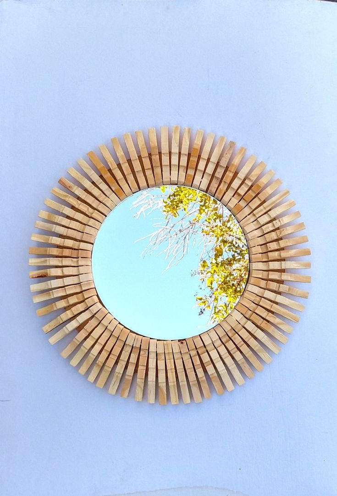
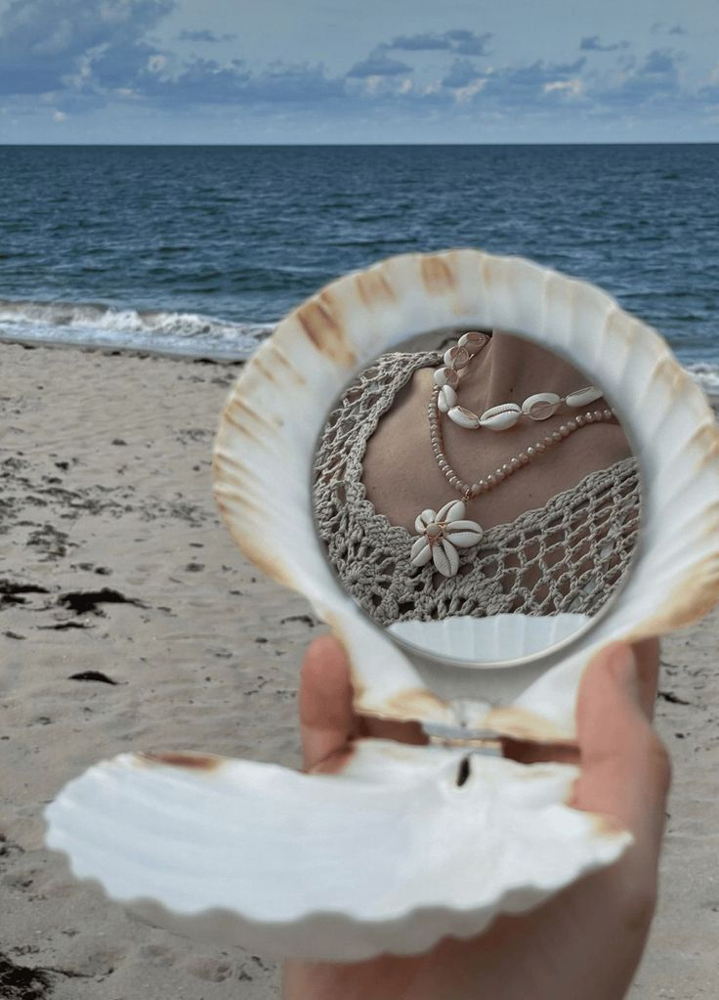
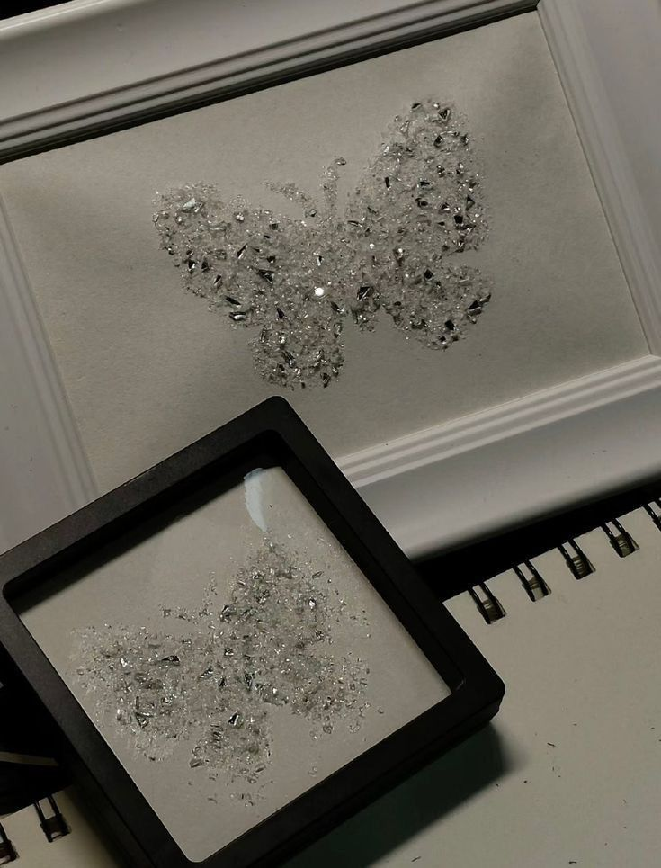

Malzemeler:
Aynanın çevresine mandalları çiçek gibi dizmek için:
• Mandal
• Ayna
• Akrilik boya (isteğe bağlı)
Adımlar:
1- Aynanın çevresine mandalları çiçek gibi dizin.
2- İsterseniz mandalları akrilik boya ile renklendirin.
3- Mandalları sabitleyerek dekoratif aynanızı tamamlayın.

Malzemeler:
• 2 adet deniz kabuğu
• Mini menteşe
• Yapıştırıcı
• Cep aynası
Adımlar:
1- Deniz kabuklarını menteşe ile sabitleyin.
2- Aynayı yapıştırıcı ile deniz kabuklarının içine yerleştirin.
3- Kurumasını bekleyip, kullanıma hazır hale getirin.

Malzemeler:
• Kırık aynalar
• Mukavva
• Yapıştırıcı
Adımlar:
1- Mukavvayı tablo olarak kullanın.
2- Kırık aynaları kelebek şekli verecek şekilde yapıştırın.
3- Kuruduktan sonra duvara asarak dekorasyonu tamamlayın.